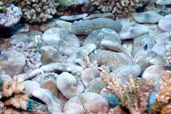

Robin Elahi, PhD
Marine Community Ecology and Population Biology
Research
Physiological ecology of mushroom corals (Fungia spp.)
Mushroom corals (Fungia spp.) are an enigmatic group of tropical reef corals. Unlike most corals, Fungia species are not colonial, but solitary organisms. A juvenile coral looks like a mushroom (hence the common name) and grows in the protected crevices of the reef framework. At some point, the coral detaches from its stalk, and actually moves (by contracting and expanding its tissue) out onto the reef for further growth and eventual reproduction. Often, Fungia will move away from the natal reef, thereby expanding the size of reefs laterally.
In Moorea, French Polynesia, I tested whether photosynthetic energy intake limits the maximum size of these corals by applying a model developed originally for anemones (Anthopleura xanthogrammica). Unlike the anemones, growth in Fungia concinna is not limited strictly be energetic constraints, and maximum size must instead be determined by alternative physiological or ecological constraints.

Aggregation of fungiids in Moorea, French Polynesia (Photo: M. Steele)
Often, mushroom corals occur in heterospecific aggregations, but visible signs of direct competition are uncommon. Although negative interactions between fungiids are generally though to be negligible, I used a simple field experiment in Okinawa, Japan to show that calcification is reduced in groups. The reduction in growth did not depend on the identity of the neighbor (the same species or a different species). Surprisingly, neighbor identity did affect coral behavior - mucus production and movement occurred more frequently in heterospecific than conspecific groups. These results suggest that there is a cost to group living, but there may be (unmeasured) benefits to living in conspecific aggregations.